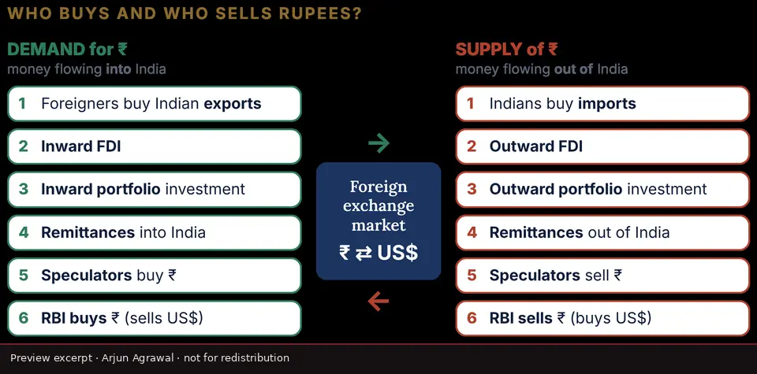
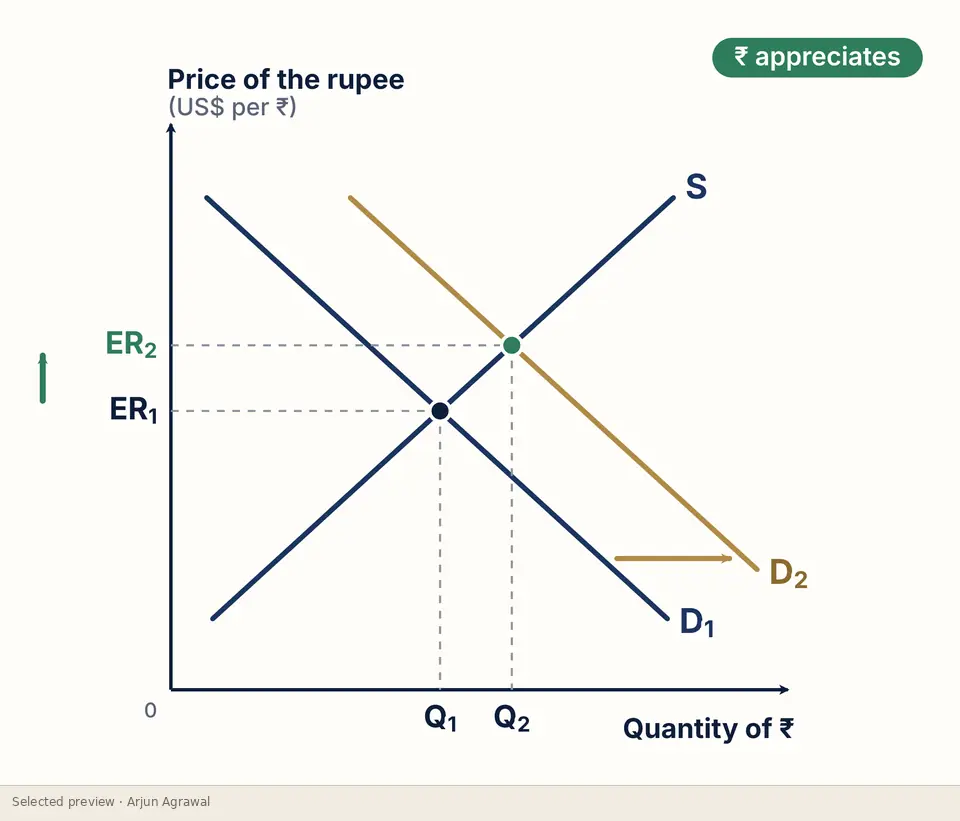
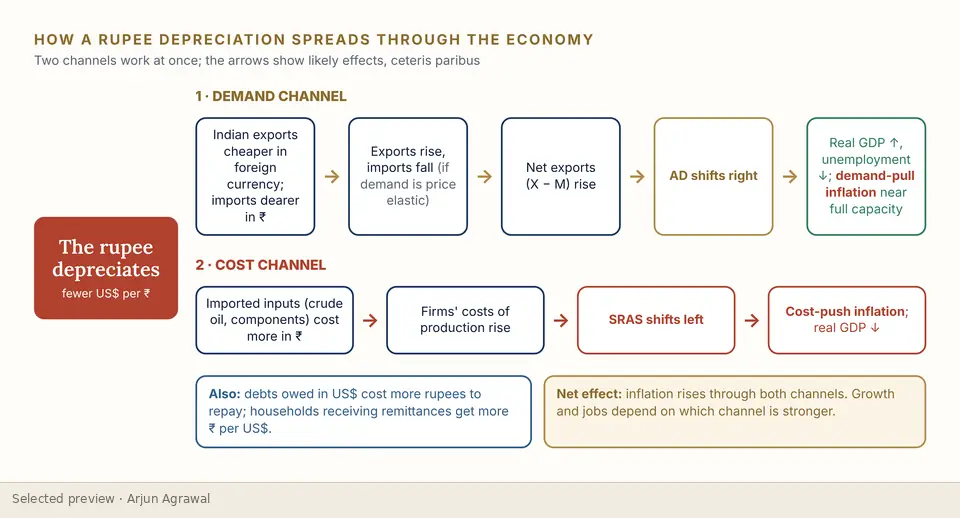
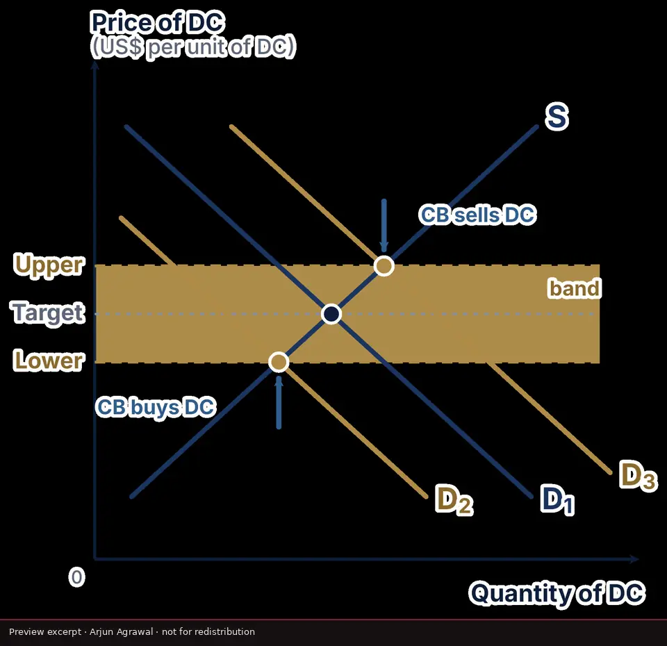
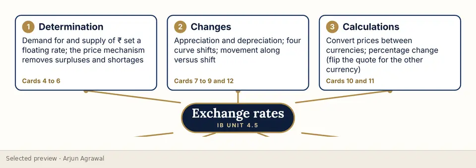

Home / Learning Studio / Exchange rates
Visual explainer · Unit 4.5
Exchange rates
The foreign exchange market built from a single real currency, the rupee: who demands it and who supplies it, what moves each curve, and how a depreciation travels through the economy to prices and output.
- Type
- Visual explainers
- Format
- Slide sequence: 21 diagrams and infographics
- Level
- SL and HL
- For
- Students, Teachers
- Topics
- Global economy, Exchange rates, Rupee, AD-AS





What it helps learners do
- Read an exchange-rate quote both ways and convert between currencies
- Identify the flows behind the demand for and supply of a currency
- Distinguish a shift of a curve from a movement along it
- Explain appreciation and depreciation from each of four curve shifts
- Trace a depreciation through net exports and import costs to AD and SRAS
- Compare floating, fixed and managed systems, including central-bank intervention
The thinking behind it
One currency throughout. Every flow is named with an Indian example, so the abstract diagram always has a real transaction behind it. Each shift is drawn on its own diagram, and the macro effects are shown as two channels that work at once rather than one chain.
What the complete resource contains
- Anatomy of a quote, and who buys and sells rupees
- Floating equilibrium, disequilibrium, and shift versus movement
- Appreciation and depreciation from each curve shift
- Inflation and interest rates moving both curves
- How a depreciation spreads through the economy, and its AD-AS effects
- Fixed rates, devaluation and a managed band
- Over- and undervalued currencies, and a spectrum of systems
- A one-page revision map
Interested in exploring more?
This page shows a small selection of excerpts. The complete resource is not published online. If you are a teacher, a student or a school interested in it, please get in touch, and I will reply personally.
Ask about this resourceOpen it in the StudioOn the platform
Independent resources by Arjun Agrawal. They are not produced or endorsed by the International Baccalaureate Organization, and none of the questions shown is an IB examination question.